В этом разделе описываются функции для временного изменения конфигурации сети, такие как установка перемычек и добавление поясняющих заметок на мнемосхемы.
Инструмент предназначен для временного соединения двух узлов (например, шин) в целях проведения тестирования, анализа или имитации ситуации.
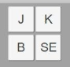
Рисунок 40. Интерфейс раздела для создания временной перемычки
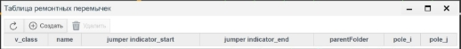
Рисунок 45. Поля для указания параметров перемычки
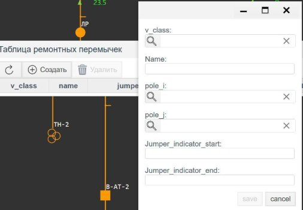
Рисунок 46. Пример выбора узлов соединения (pole_i и pole_j)
Основные параметры при создании перемычки:
v_class — класс напряжения, к которому относится перемычка.
Name — название перемычки. Важно: при создании нескольких перемычек им нужно задавать уникальные имена.
pole_i — первый терминал (например, СШ1), к которому будет подключена перемычка.
pole_j — второй терминал (например, СШ2), к которому будет подключена перемычка.
jumper_indicator_start / jumper_indicator_end — произвольные названия индикаторов, которые будут отображены на мнемосхеме. Они служат только для визуального обозначения, не влияют на функциональность.
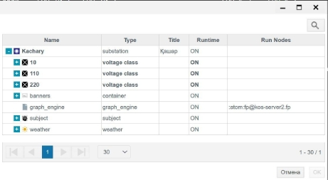
Рисунок 47. Ввод имени перемычки и обозначений на мнемосхеме
Важно: следует выбирать и заполнять только те поля, которые выделены жирным шрифтом в интерфейсе.
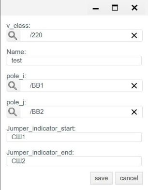
Рисунок 48. Пример настроек созданной перемычки
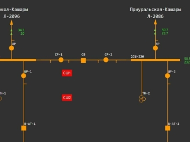
Рисунок 49. Отображение перемычки на мнемосхеме
После нажатия кнопки "Save" перемычка создаётся автоматически. Визуальные элементы (красные объекты) предназначены исключительно для отображения на мнемосхеме и не участвуют в логике соединения.
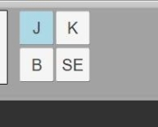
Рисунок 50. Результат добавления перемычки на схеме
Плакаты/заметки
Данный инструмент позволяет добавлять визуальные комментарии или предупреждения на мнемосхему. Это могут быть плакаты с надписями, например: "Отключено", "На ремонте", "Работы запрещены", и т.п.
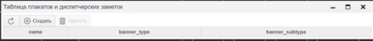
Рисунок 51. Кнопка «Создать» для добавления новой заметки
Нажмите кнопку "Создать", чтобы добавить новую заметку.
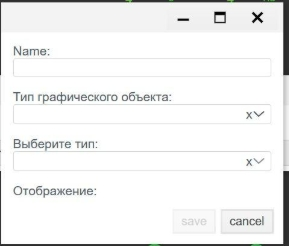
Рисунок 52. Появление новой заметки на схеме
После этого она появится на схеме, и вы сможете:
Указать текст;
Выбрать цвет;
Переместить заметку на нужную позицию.
Заметки помогают оперативному персоналу быстро ориентироваться в текущем состоянии оборудования и предотвращать ошибки при переключениях.
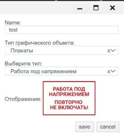
Рисунок 53. Настройка текста и цвета заметки
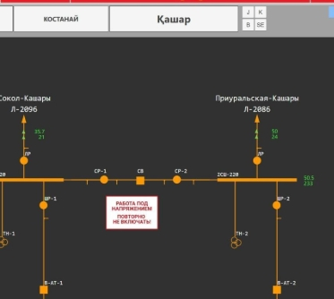
Рисунок 54. Размещение заметки в нужной точке схемы
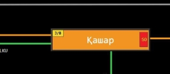
Рисунок 55. Пример применения плакатов в сложной схеме
Рисунок 56. Визуализация мнемосхемы с несколькими плакатами
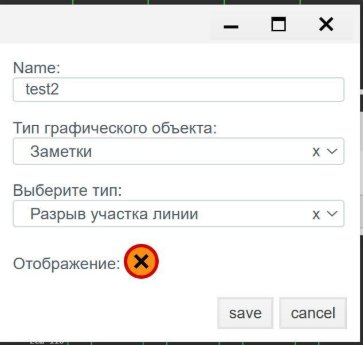
Рисунок 57. Использование цветовой кодировки для разных типов предупреждений
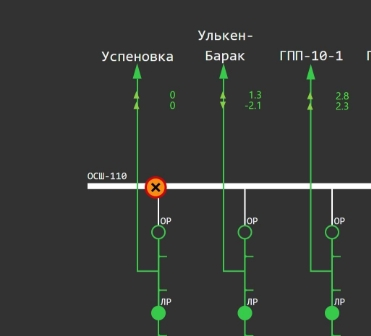
Рисунок 58. Общий вид схемы с временными объектами и заметками